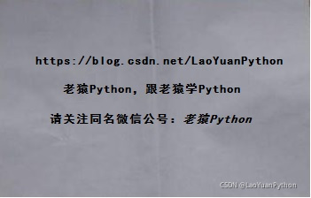
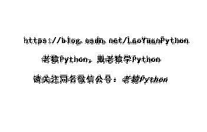
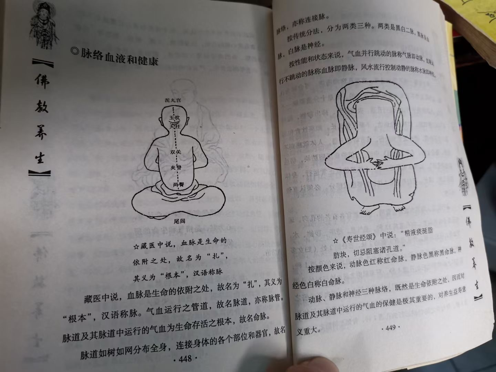

# 概述
扫描文档或拍照文档的图片往往有 灰 色背景，导致打印时黑乎乎一片，而且光线不均匀的情况下，进行 OCR 识别也会不准确，所以需要进行 背景纯化 。
# 相关成品工具
# 原本
作者在 吾爱破解论坛 发布的帖子：https://www.52pojie.cn//thread-1365278-1-1.html
简单粗暴的工具，官方链接：http://www.legalsoft.com.cn/yuanben.html<br/>
<font color="red"> 已在阿里云盘备份 </font>。
# Picture
# SSE Demo
该作者专攻图片处理，简单写的小工具。<font color="red"> 已在阿里云盘备份 </font>。
# PictureCleaner
功能较多较全的免费漂白软件（<font color="red"> 已在阿里云盘备份 </font>。），现在作者改名叫 PictureMagick （收费）。
# textcleaner
命令行工具，官网有各参数产出结果的效果对比图：
http://www.fmwconcepts.com/imagemagick/textcleaner/index.php
# ScanTailor Advanced
根据该链接，此工具效果较好，暂未测试。
只支持 Windows，工具地址：https://github.com/4lex4/scantailor-advanced
# esXGray
收费软件，备忘：http://www.eersoft.com/xgray/xgray.html
# 相关项目（有实现源码）
# vectorized-image-binarization
经测试，貌似对中文支持不是很好
测试一：


测试二：

https://github.com/nopperl/vectorized-image-binarization
# scantailor
C++ 项目，备忘， Win11 测试使用失败，可能是我不会吧
# 其他工具
# 抠图
# Python 库 rembg
介绍及效果：https://medium.com/@HeCanThink/rembg-effortlessly-remove-backgrounds-in-python-c2248501f992